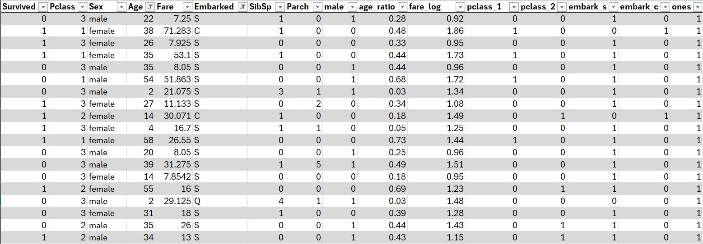
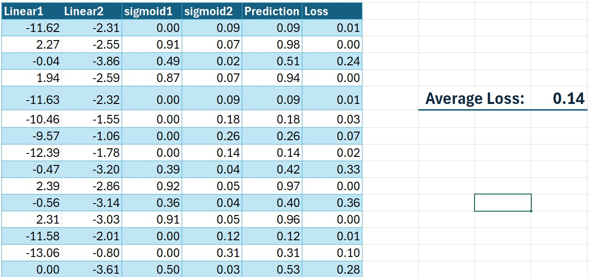

Introduction
Today I’ll be walking through the famous Titanic - Machine Learning from Disaster competition on Kaggle.
This is my first-ever Kaggle competition, and I wanted to document everything I learned. I hope this helps anyone starting in a similar position.
If you haven’t already, check out the competition page:
👉 https://www.kaggle.com/competitions/titanic/overview
Table of Contents
- Downloading the Training Data
- Preparing the Data
- Setting Up the Parameters
- Loss Function
- Training a Linear Regression Model
- Training a Neural Network
- Final Thoughts
Downloading the Training Data
Download both train.csv and test.csv from the Kaggle data section:
👉 https://www.kaggle.com/competitions/titanic/data
Preparing Data
Start by loading the CSV into Excel.
Excel:
Data → Get Data → From File → From Text/CSV → select train.csv

Data Cleaning
“Garbage in, garbage out.”
Clean data is essential for model accuracy.
1. Remove Unnecessary Columns
Identifiers like PassengerId or Ticket do not help predict survival.
We will keep:
survived, pclass, age, sex, sibsp, parch, fare, embarked
Excel Action
Right-click a column → Delete → Table Columns
2. Remove Rows with Missing Values
We can see Age and Embarked contain blanks.
For simplicity, we remove rows with missing entries.

Excel Action
Filter columns → uncheck Blank
Data Scaling
Some features (like Fare) have much larger numerical ranges than others.
We scale them to prevent misleading the model.
Create new columns:
| Column | Formula |
|---|---|
| Age_Ratio | =[@Age] / MAX([Age]) |
| Fare_Log | =LOG10([@Fare] + 1) |
| Ones | =1 |
Excel Action:
Create the new scaled columns
One-Hot Encoding
Excel models cannot work with string categories.
We convert categorical data (Sex, Embarked, Pclass) into binary indicator variables.
Create the following columns:
| Column | Formula |
|---|---|
| Male | =IF([@Sex]=“male”, 1, 0) |
| Pclass_1 | =IF([@Pclass]=1, 1, 0) |
| Pclass_2 | =IF([@Pclass]=2, 1, 0) |
| Embark_S | =IF([@Embarked]=“S”,1,0) |
| Embark_C | =IF([@Embarked]=“C”,1,0) |
| Ones | =1 |
Your table should look like this:

Action: Apply all the one-hot transformations
Setting Up the Parameters
Now for the fun part—creating trainable parameters.
Use: =RAND() * 2 - 1
This generates values in [-1, 1].

Action: Create the parameters table
Loss Function
We’ll use Mean Squared Error (MSE):
\text{MSE} = \frac{1}{n} \sum_{1}^{n} (y - \hat{y})^2
Where:
- y = actual (Survived)
- ŷ = model prediction
How Do We Compute the Prediction?
To calculate the prediction in a linear regression model, we multiply the input features by their respective weights (parameters).
| Column | Formula |
|---|---|
| Linear Prediction | =SUMPRODUCT(data[@[SibSp]:[ones]], Params) |
| Loss | =(data[@Survived]-[@Prediction])^2 |
| Average Loss | =AVERAGE(Calculations[Loss]) |

Training a Linear Regression Model
Now that we’ve set up everything, we can train the model.
In Excel, enable the Solver add-in and configure it as follows:
- Set Objective →
Average Loss - To →
Min - By Changing Variables →
Parameters - Non-Negative → Uncheck
Click Solve and watch the Average Loss decrease. Congratulations, you’ve just trained a linear regression model in Excel!


Training a Neural Network
To improve the model, we can extend it to a Neural Network by adding an additional layer and more neurons. This is similar to our linear regression model but with added complexity.
Here’s an illustration of the model architecture:
Adding a Second Neuron
After defining the network structure, we need to adjust our Excel setup to support multiple neurons, each with its own set of parameters and activation outputs.
Since our neural network contains two hidden neurons, expand the parameters table accordingly:
- Add a second row of weights (one weight per input feature).
- Include a second bias term.
A typical expanded parameter table looks like this:
| Neuron | Weight 1 | Weight 2 | … | Weight N | Bias |
|---|---|---|---|---|---|
| 1 | w_11 | w_12 | … | w_1N | b_1 |
| 2 | w_21 | w_22 | … | w_2N | b_2 |
Applying the Activation Function
Each neuron’s output must be passed through a sigmoid activation function, which compresses values into the 0–1 range:
\sigma(y) = \frac{1}{1 + e^{-y}}
In Excel, implement this as: =1/(1+EXP(-[Linear Output]))
Training the Neural Network
The loss function remains the same Mean Squared Error (MSE):
L = \frac{1}{n}\sum_{i=1}^{n}(y - \hat{y})^2
To train the full neural network in Excel, configure Solver:
- Set Objective:
Average Loss - To: Minimize
- By Changing Variables:
- All weights for Neuron 1
- All weights for Neuron 2
- All bias terms
- All weights for Neuron 1
- Non-Negative Constraint: Off (leave unchecked)
Click Solve, and Solver will iteratively optimize all parameters.
After training, your network output should resemble:

Final Thoughts
Working through this challenge brought from being completely unfamiliar with Machine Learning to being able to train a fully capable model. I’m simply mind blown that something like this can be done on Excel. I would highly recommend this kaggle challenge for anyone wanting to learn more about machine learning.